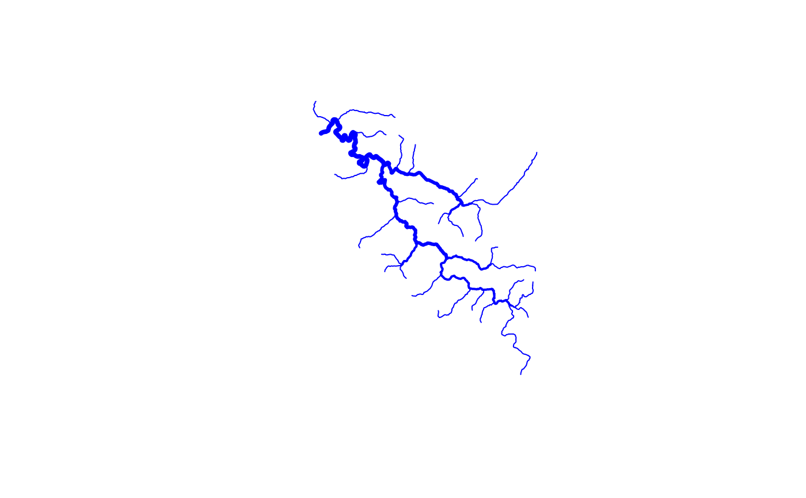

Applies a topological sort and calculates strahler stream order. Algorithm: If more than one upstream flowpath has an order equal to the maximum upstream order then the downstream flowpath is assigned the maximum upstream order plus one. Otherwise it is assigned the max upstream order.
calculate_streamorder(fl)
| fl | data.frame with dendritic ID and toID columns. |
|---|
data.frame with ID and order columns. Note the output will likelt NOT be in the same sort order as in the input.
source(system.file("extdata", "walker_data.R", package = "nhdplusTools")) test_flowline <- prepare_nhdplus(walker_flowline, 0, 0, FALSE)#> Warning: removing geometry#> Warning: Removed 0 flowlines that don't apply. #> Includes: Coastlines, non-dendritic paths, #> and networks with drainage area less than 0 sqkm, and drainage basins smaller than FALSEtest_flowline <- data.frame( ID = test_flowline$COMID, toID = test_flowline$toCOMID) (order <- calculate_streamorder(test_flowline))#> ID order #> 1 5329435 1 #> 2 5329347 1 #> 3 5329291 1 #> 4 5329359 1 #> 5 5329333 1 #> 6 5329371 1 #> 7 5329377 1 #> 8 5329399 1 #> 9 5329405 1 #> 10 5329427 1 #> 11 5329413 1 #> 12 5329419 1 #> 13 5329407 1 #> 14 5329387 1 #> 15 5329415 1 #> 16 5329355 1 #> 17 5329337 1 #> 18 5329345 1 #> 19 5329341 1 #> 20 5329815 1 #> 21 5329319 1 #> 22 5329309 1 #> 23 5329307 1 #> 24 5329297 1 #> 25 5329295 1 #> 26 5329871 1 #> 27 5329379 2 #> 28 5329845 1 #> 29 5329819 2 #> 30 5329335 2 #> 31 5329841 1 #> 32 5329299 1 #> 33 5329383 1 #> 34 5329375 2 #> 35 5329363 2 #> 36 5329321 1 #> 37 5329849 1 #> 38 5329325 2 #> 39 5329393 1 #> 40 5329327 2 #> 41 5329391 2 #> 42 5329323 3 #> 43 5329389 2 #> 44 5329817 3 #> 45 5329397 2 #> 46 5329311 3 #> 47 5329395 2 #> 48 5329313 3 #> 49 5329821 2 #> 50 5329385 2 #> 51 5329847 2 #> 52 5329843 2 #> 53 5329373 2 #> 54 5329365 3 #> 55 5329357 3 #> 56 5329343 3 #> 57 5329339 3 #> 58 5329315 4 #> 59 5329317 4 #> 60 5329305 4 #> 61 5329293 4 #> 62 5329303 4walker_flowline <- dplyr::left_join(walker_flowline, order, by = c("COMID" = "ID")) plot(sf::st_geometry(walker_flowline), lwd = walker_flowline$order, col = "blue")